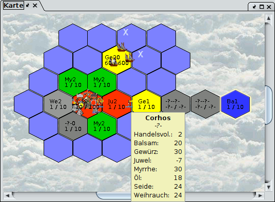

Das so genannte Ersetzungssystem ist letzlich eine Art von Programmiersprache, die es erlaubt, aus den Infos über Regionen bestimmte Werte auszurechnen. Das Ersetzersystem wird für den ATR und ARR verwendet, sowie für die Tooltips der Karte und die Regionskurzinfos in der Detailanzeige. Der ATR dient zur Beschriftung der Karte. Mit dem ARR kann man Regionen anhand eines Zahlenwertes und einer Farbskala einfärben. Natürlich kann man auch ATR, ARR und Tooltip kombinieren. Dann erhält man farbige Regionen und passende Texte auf jeder Region mit optionalen Zusatzinfos. Auch die ersten Zeilen der Detailanzeige kann mit Hilfe dieser Sprache konfiguriert werden. Die folgende Abbildung zeigt eine Karte, die anhand der Handelsgüter eingefärbt und beschriftet ist.
Welche Ersetzungsmöglichkeiten gibt es? Folgende Wörter sind im Zusammenhang mit den Tooltips wichtig. In Klammern ist jeweils ein Beispiel angegeben. Es gibt
Eine Definitionszeichenkette (Zeile) besteht nun aus mehreren hintereinander geschriebenen Wörtern, denen jeweils das Trennzeichen § vorangestellt ist.
§Kraut §herb führt in einer Region wo das Kraut Elfenlieb wächst zur Ausgabe Kraut Elfenlieb. Wenn Magellan das Wort erkennt (hier "herb") dann wird es in jeder Region durch den entsprechenden Wert ersetzt (hier "Elfenlieb"). Andernfalls wird einfach der Text ausgegeben (hier "Kraut").
Mit der zusammengesetzten Variable §item§Gegenstand kann man sich die Anzahl von Gegenstand anzeigen lassen. §item§Speer gibt die Anzahl Speere in dieser Region aus. §item§Speer§ §item§Armbrust ergibt Anzahl der Speere gefolgt von einem Leerzeichen gefolgt von der Anzahl Armbrüste. Der Gegenstand muss genau so geschrieben werden, wie er in Magellan genannt wird.
Mit if kann man die Ausgabe einschränken. So sorgt §if§not§isOzean§Bäume
§trees dafür, dass nur in Nicht-Ozeanregionen die Anzahl Bäume angezeigt
wird. Das sorgt bei Dingen wie Bäumen für mehr Übersichtlichkeit, da dann
nicht in jedem Ozeanfeld das Wort Bäume steht. Das §not kann man auch
weglassen. Dann wird nur in Ozeanregionen angezeigt (was mit Bäumen
natürlich keinen Sinn ergbit). Die komplette Syntax lautet
§if[§not]§{Bedingung}§{wenn Bedingung wahr}§else§{wenn Bedingung
falsch}§end
not ist optional für die Verneinung. Die geschweiften
Klammern inkl. Inhalt sollen durch die gewünschten Ausgaben ersetzt werden.
Der zusammengesetzte Schalter §faction§Parteinummer beschränkt das Zählen von Gegenständen auf die angegebene Partei. In einer Region, wo Partei abcd 3 Speere hat, führt §Speer §faction§abcd§item§Speer zur Ausgabe von Speer 3
Der zusammengesetzte Schalter §priv§Vertrauenslevel beschränkt das Zählen auf Parteien mit dem angegebenen Vertrauenslevel. Parteien bei denen das Passwort gesetzt ist haben den Wert 100. Möchte man eigene und fremde Personen zählen kann man folgendes verwenden: §priv§100§Eigene §count§priv§clear§ | Alle §count. Ein HELFE ALLES entspricht dem Wert 60.
Geschrieben wird nach der polnischen Notation, d.h. die Rechenoperatoren
stehen vor den beiden Operanden. §+§item§Speer§item§Armbrust addiert
Speere und Armbrüste zusammen. Durch diese Schreibweise benötigt man keine
Klammern.
a * (b + c) ist in polnischer Notation * a + b c oder *
+ b c a
a * b + c lautet + * a b c oder + c * a b.
| Name | Beschreibung | Autor |
|---|---|---|
| Handelskarte | ATR zusammen mit Handelskarte des ARR verwenden | Lars |
| Überblick Handel und Kräuter, formatiert | Liefert alle Daten, die ich schnell wissen möchte, ohne extra auf den Provinznamen in der Liste klicken zu müssen. | Frank-Michael Zimmer |
| Name | Beschreibung | Autor |
|---|---|---|
| Armbrustverteilung | Je dunkler das rot, desto mehr Armbrüste fehlen. Je dunkler das grün, desto mehr Armbrüste sind in der Region über. | Lars |
| Pestwarnung | Pestwarnung, zeigt an, wieviele Arbeitsplätze die Bauern
benötigen (arbeitende Einheiten werden nicht berücksichtigt): gelb: viele Arbeitsplätze frei grün: einige Arbeitsplätze frei rot: kritisch, nicht genügend Arbeitsplätze vorhanden, Gefahr von Pest |
Jochen Schuh |
| Einkaufsgut | Farbige Karte, wo welches Einkaufsgut zu kaufen ist. Öl - braun Weihrauch - grau Seide - weißblau Myrrhe - grün Juwel - rot Gewürz - gelb Balsam - blau |
Lars |
| Kraeuter | Farbige Kräuterkarte. Jedes Terrain hat eine Grundfarbe, die je
nach Kraut in 3 Helligkeitsstufen varriiert. Weiß für Ozean. Lila, wenn
die Region noch nicht erforscht ist. Farben, Kräuter und zurückgegebene
Werte für die Farben: Ebene Grüntöne Würziger Wagemut§1§ Eulenauge§2§ Flachwurz§3§ Wüste Gelbtöne Sandfäule§4§ Wasserfinder§5§ Kakteenschwitz§6§ Sumpf Orangetöne Gurgelkraut§7§ Blasenmorchel§8§ Knotiger Saugwurz§9§ Hochland Rottöne Alraune§10§ Windbeutel§11§ Fjordwuchs§12§ Berge Grautöne Spaltwachs§13§ Höhlenglimm§14§ Steinbeißer§15§ Gletscher Türkistöne Weißer Wüterich§16§ Schneekristall§17§ Eisblume§x§18§ Wald Blautöne Elfenlieb§19§ Grüner Spinnerich§20§ Blauer Baumringel§21§ |
Lars |
Diese ist konfigurierbar unter Optionen - Detailanzeige. Tip: Mann kann zur Übersichtlichkeit auch Enter nach jeder Zeile verwenden
| Name | Beschreibung | String | Autor | ||||||||||||||||||||||||
|---|---|---|---|---|---|---|---|---|---|---|---|---|---|---|---|---|---|---|---|---|---|---|---|---|---|---|---|
| Das Original | Die Voreinstellung |
|
|||||||||||||||||||||||||
| Regions&Parteiinfo | Ressourcenpool und Verdienstmöglichkeiten in der Region. Die Angaben sind teilweise unvollständig (zum Beispiel keine Flammenschwerter) |
|
Lars |
| Ersetzer | Erläuterung (wenn nichts anderes angegeben, gilt der Ersetzer für eine Region). Parameter müssen genau so angegeben werden, wie sie Magellan anzeigt. Also item§Stein für Steine von Einheiten. Nicht item§stein und auch nicht item§Steine | Erläuterndes Beispiel. Wenn keines angegeben ist, reicht der Name des Ersetzers um eine Ausgabe zu erhalten |
|---|---|---|
| + - * / | Addition, Subtraktion, Multiplikation und Division von Zahlen | 3 + (Bauern * 3) = §+§3§*§wage§peasants |
| < | Liefert TRUE, wenn der Wert des ersten Parameters (wenn möglich als Zahl, sonst als String) kleiner als der zweite ist. | Liefert TRUE, falls Bauernzahl > 5: §<§5§peasants |
| contains | Prüft, ob das zweite Argument(als String) im ersten(als String) vorkommt. Es wird Groß-/Kleinschreibung beachtet. | Liefert FALSE für die Region Lummerland: §contains§rname§Land§ |
| containsIgnoreCase | Wie oben, aber Groß-/Kleinschreibung wird ignoriert. | Liefert TRUE für die Region Lummerland: §contains§rname§Land§ |
| count | Anzahl Personen | Anzahl Personen: §count |
| countUnits | Anzahl Einheiten | Anzahl Einheiten: §count |
| entertain | Unterhaltung max. wie im CR | UnterhaltMax: §entertain |
| description | Liefert die Beschreibung beschreibbarer Objekte wie Regionen oder Einheiten | Zählt "Soldaten" in der Region: §filter§contains§description§Soldat§count§ |
| equals / equalsIgnoreCase | Liefert TRUE, wenn die beiden zu vergleichenden Teile gleich sind. Die zweite Variante ignoriert dabei Groß-/Kleinschreibung | if§equals§herb§Eisblume§Hier wächst Eisblume§keine Eisblume§end |
| faction | Beschränkt folgende Ersetzer auf angegebene Partei. Parteinummer angeben. faction§clear hebt die Einschränkung wieder auf. | Zählt Personen für Partei abcd: faction§abcd§count |
| filter | Filtert Einheiten basierend auf einem Ersetzer, der als erstes Argument übergeben wird. Dieser Filter wird auf Ersetzer wie count angewendet. | Zählt "Soldaten" in der Region: §filter§contains§description§Soldat§count§ |
| herb | Liefert das in der Region wachsende Kraut. | herb |
| horses | Anzahl Pferde | horses |
| if | Wenn Bedingung true ist, führe Ersetzer aus. Kann mit else erweitert werden. Schachtelung ist möglich | Wenn weniger als 100 Pferde, schreibe "weniger als 100", ansonsten schreibe "mehr oder gleich 100": if§<§horses§100§weniger als 100§else§mehr oder gleich 100§end |
| iron | noch nicht abgebautes Eisen | iron |
| ironlevel | die aktuelle Stufe, auf der Eisen abgebaut werden kann | ironlevel |
| isAktiverVulkan, isBerge etc. | liefert true, wenn das Terrain der Region dem angegebenen Typ entspricht | if§isEbene§Region ist Ebene§else§Region ist keine Ebene§end |
| item | Anzahl eines Gegenstandes. Angabe von Gegenstand exakt wie im Report geschrieben erforderlich | item§Speer |
| laen | noch nicht abgebautes Laen | laen |
| laenlevel | die aktuelle Stufe, auf der Laen abgebaut werden kann | laenlevel |
| mallorn | Liefert die Menge des in der Region als Ressource vorhandene Mallorns zurück. | mallorn |
| mallornregion | liefert wahr, wenn die Region eine Mallornregion ist, sonst falsch. | mallornregion |
| maxWorkers | max. zur Verfügung stehende Arbeitsplätze. Bäume berücksichtigt | maxWorkers |
| maxtrade | Handelsvolumen bevor sich Preise verändern | maxtrade |
| morale | Bauernmoral (E3) | morale |
| name | Gibt den Namen von benennbaren Objekten zurück. Das sind im Moment Einheiten, Regionen, Gebäude, Schiffe, Inseln, Sprüche und Tränke. Im "normalen" Gebrauch wird dieser Ersetzer den Namen der aktuellen Region zurückliefern. Im Zusammenhang mit Einheitenfiltern liefert er aber den Namen einer Einheit, was zum Ausfiltern mittels Stringvergleich/-inhalt benutzt werden kann. | Zählt Personen von Einheiten A-J: §filter§<§name§K§count§ |
| newline | Fügt Zeilenumbruch ein. Funktioniert nicht mit Tooltip. Dort Html verwenden | erste Zeile§newline§zweite Zeile |
| not | negiert Ersetzer. True wird zu false und false zu true | Oft gebraucht um Ozean auszuschließen: if§not§isOzean§kein Ozean |
| null | Gibt TRUE zurück, falls das Argument null ist, sonst FALSE. | §if§null§iron§-§else§iron§end |
| oldHorses und andere oldwerte | Liefert den Wert von der vorherigen Runde | oldHorses |
| op | "op" ist ein parametrischer Ersetzer, der als Parameter "true"
oder "false" verarbeiten kann. Es steht für OperationSwitch - man
schaltet die Arbeitsweise von Operatoren um. Ist der Wert hinter "op"
"true", werden null-Werte (also beispielsweise Fehler in vorigen
Berechnungen oder nicht bekannte Werte) als 0 interpretiert, ansonsten
als fehlerhaft(und die Rechnung abgebrochen). Andreas dazu: Beispiel:
Wir haben eine Region, die 5 Eisen und kein (unbekannte Zahl) Laen
enthält. Dann bedeutet das: +§null§5 (mit null ist nicht der String,
sondern ein Objekt gemeint) => ergibt standardmäßig null, was zu -?-(oder anderem) gemacht wird. Mit op gilt: null=0 => +§null§5 = 5 Das Problem ist aber: Eine Nachbarregion ist sichtbar, aber weder Eisen noch Laen bekannt. Korrekt wäre nun die Anzeige "-?-", aber es kommt "0". Du mußt es nicht nutzen, bekommst dann aber möglicherweise falsche Werte. Und wenn Du's bei zwei unabhängigen Dingen nutzt, bekommst Du auch noch falsche Daten. Im Moment ist das ganze irgendwie unausgereift. Ich überlege, eine Levelstruktur einzubauen(also 1 x null, 2 x null, ...). |
mitOP:§op§true§+§iron§laen§op§false§ OhneOP:§+§iron§laen |
| peasantWage | Einnahmen pro Bauer inkl. Burgenbonus | peasantWage |
| peasants | Anzahl Bauern | peasants |
| posX, posY | Gibt die x- bzw. y-Koordinate der Region zurück. | §posX |
| price | Preis für ein Luxusgut. Luxusgut wie in Magellan angeben | price§Öl |
| priv | Beschränkt folgende Ersetzer auf Parteien mit einer Mindesvertraulichkeitsstufe. Vertrauenslevel angeben. Vertrauenslevel wird in der Parteistatistik angezeigt. priv§clear hebt die Einschränkung wieder auf. | Alle Personen denen min. Helfe Alles gesetzt ist: priv§60§count |
| privminmax | Beschränkt folgende Ersetzer auf Parteien deren Vertrauenslevel zwischen den beiden Angaben liegt | Anzahl Personen, denen Helfe gesetzt ist: privminmax§1§60§count |
| recruit | Wieviel rekrutiert werden können | recruit |
| rname | Regionsname | rname |
| rtype | Terrain. z.B. Ebene | rtype |
| silver | Silber der Bauern | silver |
| skill | Anzahl Personen, die das Angegebene Talent besitzen. | skill§Unterhaltung |
| skillmin | Anzahl Personen, die ein Talent mit angegebener Mindeststufe besitzen. Talent und Stufe angeben | skillmin§Unterhaltung§3 |
| skillminsum | Talentstufen addiert. Wobei eine Mindesttalentstufe vorhanden sein muß, um dazugezählt zu werden. Z.B. um mögliche Produktionsmenge festzustellen. Talent und Stufe angeben | skillminsum§Holzfällen§2 |
| skillsum | Addierte Talentstufen. Talent angeben | skillsum§Handeln |
| soldchar1 | Einkaufbares Luxusgut, erster Buchstabe | |
| soldchar2 | Einkaufbares Luxusgut, erste beiden Buchstaben | |
| soldname | Einkaufbares Luxusgut, voller Name | |
| soldprice | Einkaufbares Luxusgut, Einkaufspreis. Positiver Wert | |
| sprouts | Anzahl Schößlinge | sprouts |
| stones | noch nicht abgebaute Steine | stones |
| stoneslevel | Die Stufe, auf der aktuell Steine abgebaut werden können | stoneslevel |
| substr | Liefert einen Teil einer Zeichenkette. Die ersten beiden Argumente sind Start (einschließlich) und Ende (ausschließlich), das dritte Argument ist die Zeichenkette. Negative Werte werden vom Ende der Zeichenkette gerechnet. | Letzte zwei Buschstaben des Regionsnamens: §substr§-2§-1§rname |
| tag | Gibt den Inhalt eines Tags an. Tagname angeben | Wenn der Tag regionicon existiert, kann man ihn anzeigen lassen: tag§regionicon |
| tagblank | Gibt den Inhalt eines Tags an. Tagname angeben. Wenn der Tagname nicht existiert, wird ein leerer String geliefert anstelle des sonst üblichen -?- | tagblank§regionicon |
| trees | Anzahl Bäume | trees |
| wage | Verdienst einer Person, wenn diese arbeitet inkl. Burgenbonus | wage |